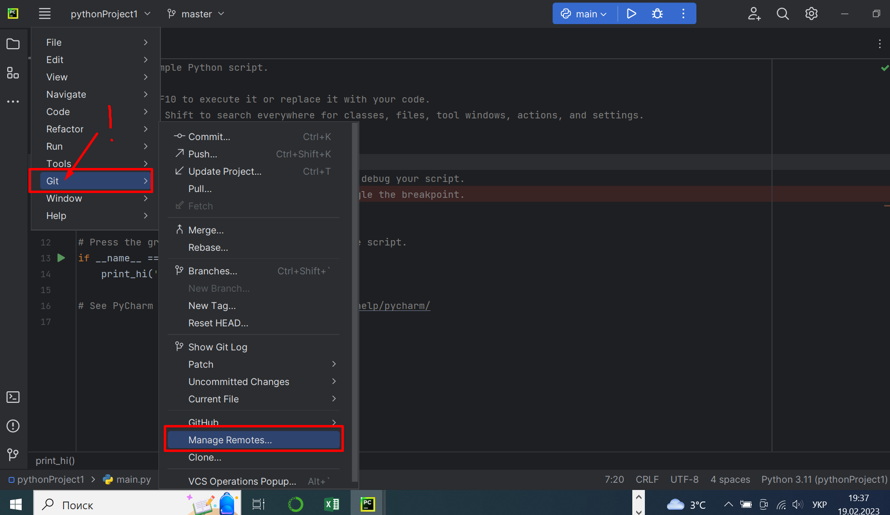
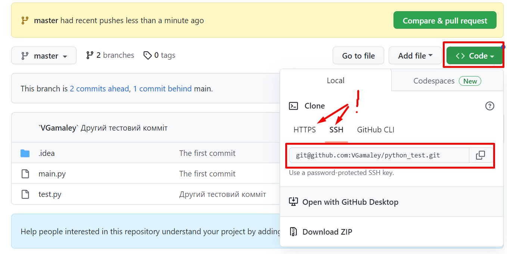

Лабораторна робота №1. Інсталяція та налаштування Python-середовища
Мета: quick start для роботи з python3 у середовищі IDE PyCharm системою контроля версій git.
Перед виконанням лабораторної роботи необхідно опрацювати матеріал Лекції 1.
Що ви будете вміти?
- Інсталювати дистрибутив Python.
- Інсталювати та налаштовувати IDE PyCharm.
- Створювати Python-проєкт у PyCharm та зв’язувати його з СКВ git.
- Писати і відлагоджувати прості програми на python у середовищі PyCharm.
- Комітити написаний код у віддалений репозиторій на на GitHub
Інсталяція Python
Ідемо на офіційний сайт Python.
Завантажуємо та встановлюємо актуальну версію дистрибутиву Python3.
Встановлюємо python, (бажано прийняти праметри інсталяції за замовчанням).
Запускаємо консоль
cmdі запускаємо python командоюpython:

Якщо інтерпретатор встановлений правильно, має з’явитися наступний інтерфейс взаємодії з ним:

Для виходу з режиму роботи з інтерпретаром назад у консоль потрібно натиснути комбінпцію клавіш Ctrl-z.
Інсталяція та налаштування IDE PyCharm
Інсталяція
Після встановлення інтерпретатора python потрібно завантажити, встановити і налаштувати IDE PyCharm. Для цього необхідно:
Завантажити безкоштовну community версію, звернувшись за посиланням.
Виконати інсталяцію IDE PytCharm. При інсталяції важливо не забути проапдейти змінну оточення PATH, для того щоби можна було з поточного каталогу просто завантажувати код у середовище розробки.
Після завершення інсталяції обов’язково перезавантажити комп’ютер.
Запустити IDE PyCharm. Якщо всі попередні кроки виконано коректно, на екрані має з’явитися приблизно таке:

Створення Python-проєкта
Після інсталяції ми маємо три наступні можливості:
- створити новий проект (New Project);
- відкрити існуючий (Open);
- імпортувати його віддаленого репозиторію, наприклад, з GitHub.
Розглянемо перший варіант – створимо проєкт з нуля. Для цього у вікні, що відкрилося, потрібно звернути увагу на наступні важливі речі:
- спосіб встановлення віртуального середовища;
- місце розташування проєкта, що створюється;
- версію базового інтерпретатора.

Після створення проєкта ми маємо опинитися в середовищі, яке буде мати наступний вигляд.

Це так званий старий інтерфейс програми. Можна встановити новий (FileUI) і перезавантажити PyCharm.
Для того, щоби встановити потрібні пакети, можна скористатися менеджером пакетів pip і зробити це в консолі, або перейти до File/Settings/Project/Python Interpretator.
Написання та запуск коду. Налаштування PyCharm-Git-GitHub середовища
Для ефективної, зокрема командної, роботи потрібно створений проект зв’язати з системою контроля версій (СКВ).
Існують різні СКВ, найбільш популярною з яких наразі є Git.
Для того, щоби налаштувати середовище PyCharm-Git-GitHub необхідно:
- Завантажити і налаштувати СКВ Git на своєму локальному комп’ютері.
- Створити акаунт на ресурсі GitHub.
- Створити репозиторій на GitHub у своєму акаунті.
- Зв’язати його із створеним у PyCharm проєктом на python.
Будемо вважати, що п. 1-3 вами виконані і покажемо як виконати п. 4.
Cтворення git-репозиторію і зв’язування його з python-проєктом

Ця команда аналогічна команді git init, яка ініціює створення git-репозиторію у поточному каталозі, в якому знаходиться наш python-проєкт. Наступний крок – зв’язування його з віддаленим репозиторієм, який знаходиться на GitHub.
Зв’язування створеного python-проєкта з відддаленим Git-репозиторієм

Зверніть увагу, що пункт меню змінив назву з VCS на Git. Далі потрібно скопіювати посилання з GitHub-репозиторію і вставити її у віповідне поле в PyCharm. При цьому слід враховувати протокол, за яким налаштована взаємодія Git-на локальному комп’ютері з віддаленим репозиторієм: SSH або HTTPS.


Робота з віддаленим репозиторієм
Будь-які зміни в проєкті можуть бути додані в індекс Git-репозиторію і закомічені у репозиторій на локальній машині. Після того копія локального репо може бути записана у віддалений репо на GitHub. Перелік необхідних команд Git, якщо викоростовувати для цього консоль, може бути таким:
git status- перевірка статусу файлів;git add .- додавання всіх новостворених файлів у індекс;git commit -m "коментар до коміту"- додавання змін у локальний Git-репозиторій;git push -u origin master- відсилання поточної локальної копії Git-репо на GitHub-репозиторій.
Початківці це можуть зробити простіше через меню PyCharm.
Після цього ми будемо мати налаштоване середовище для ефективного написання та відлагодження коду на Python з можливістю збереження всіх версій проєкту як у локальному Git-середовищі, так і у віддаленому на GiHub.
Завдання для самостіної роботи
Завантажити і встановити
Python.Завантажити, встановити і налаштувати IDE PyCharm у відповідності з інструкціями, описаними вище
Завантажити, встановити і налаштувати систему контроля версій Git на вашому робочому комп’ютері.
Створити акаунт на GitHub та стоврити в ньому новий проєкт з іменем StudentLastName_project.
Налаштувати зв’язок PyCharm з Git.
Налаштувати зв’язок PyCharm з віддаленим репозиторієм на GitHub.
Створити файл lab_1_StudentLastName.py з кодом, який виводить фразу “Привіт, Ваше Прізвище”.
Закомітити файл у локальний репозиторій.
Відправити (“запушити”) поточну версію Git-проєкта у віддалений репозиторій на GitHub.
Звіт має складатися з файлу (за основу взяти цей Python-зошит) з відповідними скріншотами
lab_1_StudentLastName.ipynb. У звіті має бути посилання на Ваш GitHub-репозиторій з Вашим проєктом та відповіді на контролі запитання.
Контрольні запитання
У чому відмінність інтерпретатора від компілятора? Python – компілятор чи інтерпретатор?
Що таке IDE PyCharm?
Що таке система контроля версій (СКВ) і для чого вона призначена? У чому принципова відмінність СКВ SVN та GIT?
Що відбувається при виконанні команди
git add .?Що відбувається при виконанні команди
git commit?Якою Git-командою виконується розміщення локальної копії Git-репозиторію проєкта на віддаленому, що знаходиться на GitHub?